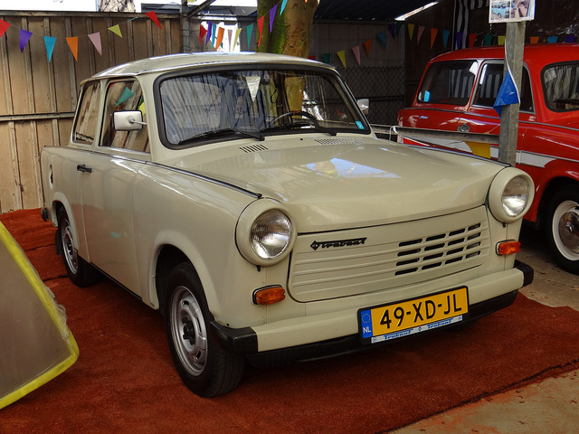

Trabant
Pure love to "plasic".
Why Trabant?
Reasons not to buy it:
- it's ugly
- doesn't drive well
- low quality build
- it's old
- it's shit
So why the hell Trabant?
small, but still great for 4 adults
big boot
cheap parts
cheap service
great fun
great people drive them
easy to improve
Short history lesson
First was called P50 aka Trabant 500 (produced 1957–1962)
Trabant 600 (produced 1962–1964)
Trabant 601 (almost 30 years!) (produced 1963–1991)
Trabant 1.1 (produced 1990–1991 with a 1,043cc)
Let's see that
Trabant 500
Trabant 600
Trabant 601
Trabant 1.1
How it's made
Solves family problems
Grip? What grip?
You have to be James May or Stig to drive Trabant
Some tuning ideas
Still alive?
- 3.051.485 Trabants left factory
- 1994-1995 444 series left factory
- BHP from 18 to 39.5 but after engine swap... (2.8 VR6)
- Great meetings in Europe (Germany, Slovakia, Hungary, Poland)
Do ya remember Green Hornet?
Few pics
Do not be so stressed, just 11

Some nice video...
Still not sleeping?
- More pictures: MIXOL.ORG